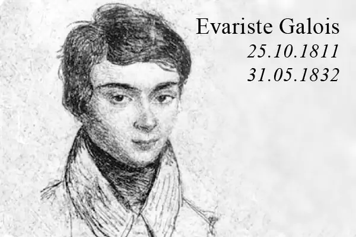

(Competición de Matemáticas)
🛈 Información general:
Bienvenido al sitio no oficial de l’Evariste, concurso de excelencia matemática organizado por la Albert School.
Su nombre hace referencia al prodigio de las matemáticas Évariste Galois, uno de los más grandes matemáticos del siglo XIX, famoso por su formidable intuición y su imprudente impulsividad.
Se trata de un concurso abierto a todos los estudiantes de secundaria cuya primera edición se celebrará el sábado 3 de febrero de 2024 en las instalaciones de la Albert School (campus de París - X distrito).
Para participar, debe formar un equipo de cuatro personas que incluya al menos una chica.
Encontrará los detalles de inscripción en la sección siguiente.
El concurso consta de dos pruebas escritas:
- Una prueba individual por la mañana de 10:00 a 12:00.
- Una prueba en grupo de cuatro por la tarde de 13:00 a 17:00.
💸 Premio en efectivo:
La modesta suma de 100€ será entregada a los 5 primeros de la prueba de la mañana.
Para la prueba de la tarde:
- 1000€ serán entregados al grupo que quede primero.
- 600€ serán entregados al grupo que quede segundo.
- 400€ serán entregados al grupo que quede tercero.
(Cabe destacar que la prueba de la mañana tiene un coeficiente 1, y la prueba de la tarde tiene un coeficiente 2)
📝 Modalidades de inscripción:
Para optar a l’Evariste, nada más sencillo, debe con su equipo:
- Rellenar cada uno el siguiente Typeform: https://albertschool.typeform.com/levariste-2024
- Luego enviar a contact@levariste.com
(con el asunto “Evariste 2024” seguido del nombre de su equipo) los siguientes elementos:
- A elegir:
- Un video de 2 a 3 minutos que represente a su equipo y presente de manera original su interés por las matemáticas.
- Un texto de máximo dos páginas que represente a su equipo y presente de manera original su interés por las matemáticas.
- Un justificante de cada uno que pruebe que son estudiantes de secundaria. Puede ser un certificado de escolaridad nominal y fechado, un boletín de notas nominal y fechado, etc.
- A elegir:
⚖️ Reglamento
Este reglamento tiene como objetivo definir las condiciones y modalidades de participación en este concurso.
Los organizadores se reservan el derecho de modificar el reglamento en caso de circunstancias imprevistas, informando a los participantes de los cambios realizados.
El reglamento será recordado al inicio de cada prueba.
- Los candidatos deben presentarse con una identificación válida el día del concurso.
- El uso de cualquier documento o material electrónico (calculadoras, teléfonos, tabletas, ordenadores, relojes inteligentes y cualquier dispositivo electrónico de comunicación o almacenamiento) está estrictamente prohibido durante las pruebas. Cualquier infracción a esta regla resultará en la descalificación inmediata del candidato y de su equipo.
- Cualquier comportamiento de trampa o intento de fraude por parte de un candidato resultará en su descalificación inmediata y la de su equipo.
- Cuando suene la señal de fin de la prueba y un candidato no deje de escribir, el supervisor de la sala se reserva el derecho de descalificar al candidato y a su equipo.
- Los candidatos deben presentarse quince minutos antes del inicio de cada prueba. Cualquier candidato que llegue tarde será rechazado y descalificará a su equipo.
- Los resultados del concurso se publicarán en el sitio oficial de l’Evariste en los días posteriores a la competición.
- Al anunciar los resultados, los equipos participantes tendrán un plazo especificado de un mes para presentar cualquier reclamación sobre los resultados. Las reclamaciones deben ser presentadas por escrito y debidamente motivadas.
⁉️ FAQ
No tengo grupo, ¿qué hago?
Puede unirse al Discord para formar un equipo con otros en la misma situación. (https://discord.gg/QF8vKGwXbk)
No soy francés, ¿puedo participar?
La nacionalidad no es un criterio para participar. Son bienvenidos independientemente de su nacionalidad.
No estoy escolarizado en Francia, ¿puedo participar?
Los participantes no escolarizados en Francia también son bienvenidos. Sin embargo, debe estar escolarizado en un nivel equivalente a la secundaria en Francia, y poder asistir a la Albert School el día del concurso.
Estoy en segundo año de secundaria, ¿puedo participar?
Sí, los estudiantes de segundo año de secundaria pueden participar en este concurso.
Tenga en cuenta que los enunciados están dirigidos a un público de primer y último año de secundaria.
« Sueño con un día en el que el egoísmo ya no reine en las ciencias, donde nos asociemos para estudiar, en lugar de enviar a los académicos sobres sellados, nos apresuremos a publicar nuestras más pequeñas observaciones siempre que sean nuevas, y añadamos “no sé el resto”. »
📖 Annales
- Sujet zéro
- Sujet Individuel 2024
- Sujet Individuel 2024 (ébauche de corrigé)
- Sujet Groupe 2024
- Sujet Groupe 2024 (ébauche de corrigé)
🏆 Palmarés
Por el momento no hay ganadores, ¡la primera edición aún no ha tenido lugar!📞 Contactarnos
InstagramEmail: contact@levariste.com